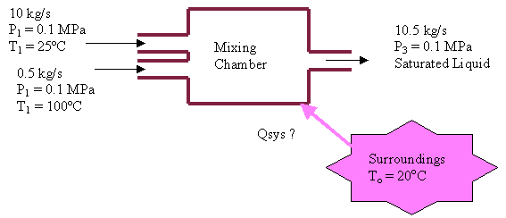
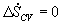
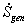

MODULE 15: GENERAL BALANCE OF ENTROPY
(fragments of the CD that comes with
Cengel&Boles's book "Thermodynamics", 3-d edition, McGraw-Hill,
1998)
Example 1
An inventor claims to have developed a water
mixing device in which 10 kg/s of water at 25ºC and 0.1 MPa and 0.5 kg/s of
water at 100ºC, 0.1 MPa are mixed to produce 10.5 kg/s of water as a saturated
liquid at 0.1 MPa. If the surroundings to this device are at 20ºC, is this process
possible? If not, what temperature must the surroundings have for the process
to be possible?
System:
The mixing chamber control volume.

Property Relation:
The steam tables.
Process and Process Diagram:
Assume steady state, steady flow.
Conservation Principles:
First let's determine if there is a heat
transfer from the surroundings to the mixing chamber. Assume there is no work
done during the mixing process, neglect kinetic and potential energy changes.
Then for two entrances and one exit the first law becomes
So, 1996.33 kJ/s of heat energy must be transferred from the surroundings to this mixing process. Or .
For the process to be possible, the second law must be satisfied. Write the second law for the isolated system,
For steady state, steady flow 
. Solving for entropy generation, we have
Since 
must be  0 for to satisfy the second law, this process is impossible, and the inventor's claim is false.
0 for to satisfy the second law, this process is impossible, and the inventor's claim is false.
To find the minimum value of the surrounding temperature to make this mixing process possible, set  = 0 and solve for Tsurr.
= 0 and solve for Tsurr.
One way to think about this process is as follows: Heat is transferred from the surroundings at 315.74 K (42.74ºC) in the amount of 1996.33 kJ/s to increase the water temperature to approximately 42.74ºC before the water is mixed with the superheated steam. Recall that the surroundings must be at a temperature greater than the water for the heat transfer to take place from the surroundings to the water.